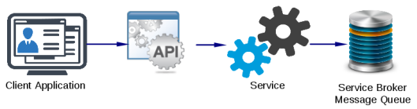

SQL Server provides a relatively easy way to decouple the messaging from the data being communicated between applications, and provides a service bus for inter-service messaging. Service Broker takes the form of a separate collection of tables in an SQL database, each table being a messaging queue, and the operations are performed using a special variant of the SQL query language.
Advantages of Asynchronous Messaging
With synchronous communication, one application will send a message to the address of the receiving application, which might have a listener process on a TCP/UDP port. An acknowledgement message might be returned to the sending/requesting application, enabling it to switch to another messaging task.
While this pont-to-point method of communication might be more efficient on a network with relatively few services, it’s not scalable. Dependencies might exist between the applications, and there must be a way of tracking or resolving application addresses.
Asynchronous messaging is a possible solution to these limitations. With asynchronous messaging, applications can ‘fire and forget’ messages, regardless of whether the recipient is online, by pushing messages to a queue. In Microsoft’s Service Broker model, the receiving application (the target or subscriber) might poll the Service Broker regularly for messages with a specific value on the queue. This exchange might be part of a ‘dialogue’.
Communicating endpoints wouldn’t necessarily be the client applications themselves. They could instead be services with an API that applications might call.

The Service Broker Message Queue
If configured, the Service Broker tables can be viewed using SQL Server Management Studio. While a messaging queue can be queried like any database table, other main operations are performed using the Service Broker Data Description Language (Service Broker DDL).
In the message queue, each message has the following fields:
- status
- priority
- conversation_group_id
- conversation_handle
- service_name
- service_id
- service_contract_name
- message_type_name
- message_type_id
- message_body
The sending application calls a stored procedure, perhaps through a Web Service or Web API. The sending stored procedure might be called something like ‘
dbo.spSendMessageToReceivingQueue‘ and the receiving stored procedure might be called ‘
dbo.spGetMessageFromReceivingQueue‘.
As we can see, the stored procedure sets the conversation handle for the message and the service it’s being sent for. It then sends the message and ends the conversation.
Message Flow
An exchange between two endpoints or services is part of a ‘dialogue’. This stage creates a ‘contract’ to determine the message type(s) that can be sent and received on the messaging queue. When this is done, the dialogue is given a 32-digit hexadecimal handle, so the initiating service/application is referencing the correct thread.
As already mentioned, messages aren’t pushed to the queue using the SQL INSERT statement. Instead, the initiator (or a stored procedure) uses the ‘SEND‘ command. Accompanying the SEND command are the dialogue handle, message type ID and message body.
Message Queue and Entity Framework
Since I had problems adding a Service Broker queue directly into an Entity Framework model, I had to create a view within SQL Server Management Studio first. This view isn’t created within the Service Broker directory, but within the database Views directory.
Creating a View seems to duplicate the message queue as a conventional table that could be accessed by Entity Framework when creating an MVC model.
Microsoft Message Queue Server
I’ve also very recently come across the Microsoft Message Queue Server (MSMQ), which is an optional feature of Windows Server (you should also find this within Windows Features on Windows 7). MSMQ does roughly the same thing as Service Broker, but messages are buffered as files on the server, instead of being pushed to a SQL database table/queue. I haven’t done any development work with this yet.
To get this installed, open the Server Manager interface and find the Message Queuing services in Add Roles and Features.
Messages are stored at C:\Windows\System32\msmq. The message queue, rules and triggers are accessible using the Computer Management utility.
A MSMQ rule can be applied to one of the following message fields to launch a specific EXE or COM component:
- Message label
- Message body
- Message priority
- Application-specific message number
- Message source computer ID
Service Broker and MVC
Initially my application displayed a message body as a large block of digits when it should have been an XML message. When looking at the Service Broker view, each message body was prefixed with ‘0x’, so the message was being read in hexadecimal form and translated into its denary representation. To rectify this, first alter the database view, so that the var-binary is cast as a string. Next, update the MVC model, so that it accepts the column data as a string.
The data should still be passed from the model, through the controller and displayed as its original XML when running the application.